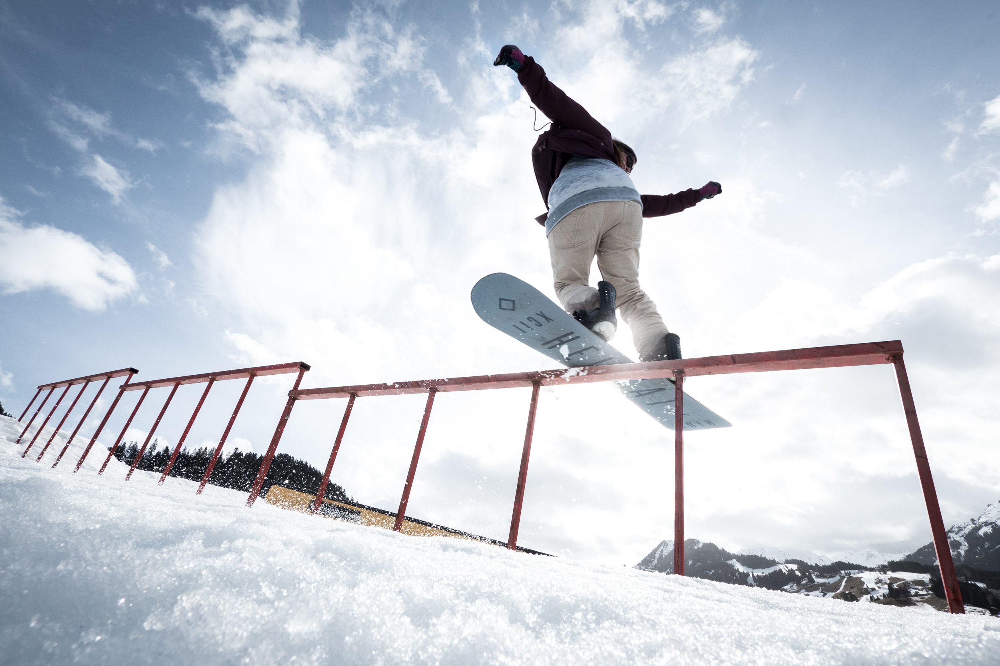

All About Tricks

Here are some of the basics:
- Ollie: A method of getting air without a jump. You just lift your front foot and spring off the tail of your board.
- Rail Slide: To slide the along almost any non-flat surface (e.g. trees, a picnic table, etc.) on edges of your snowboard.
- 180 Air: A simple air with a 180 rotation. Off a straight jump this leads to a switch from regular to fakie or vice cersa. In the halfpipe, you continue the same way you were already riding.
- Grab: Using one or both hands to grab either edge of your snowboard. Works better if you're in the air at the time.
- Halfpipe: A snow structure built for freestyle riding build like a pipe sliced longitudinally with flat areas along the sides.
- 360 Air: An air with one full rotation. When done in the halfpipe and riding fakey, it is called a Caballerial. Best to do with a grab as well , and a flip, to a rail slide, and then get sponsored by a company.